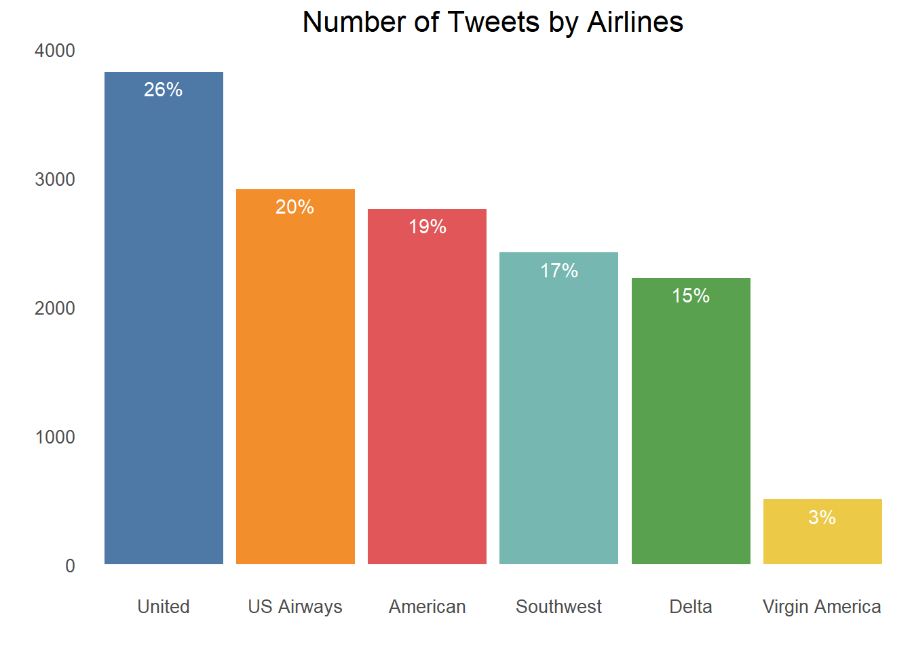
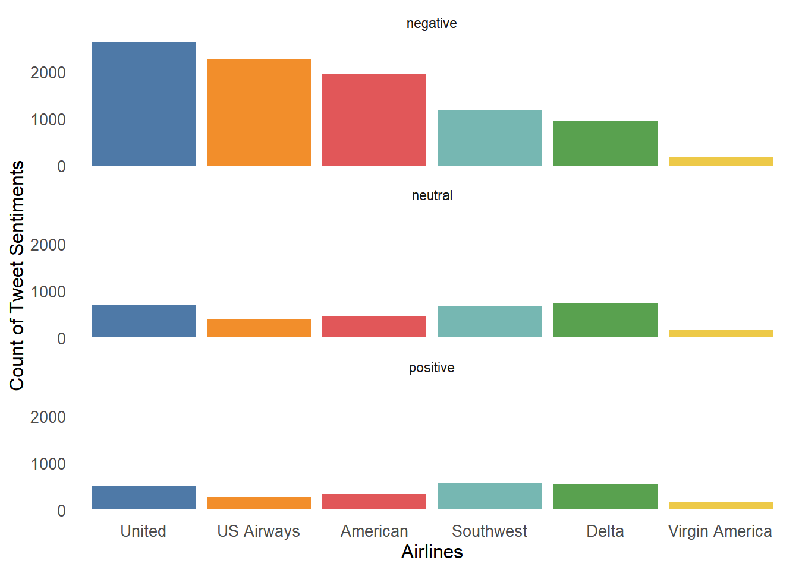
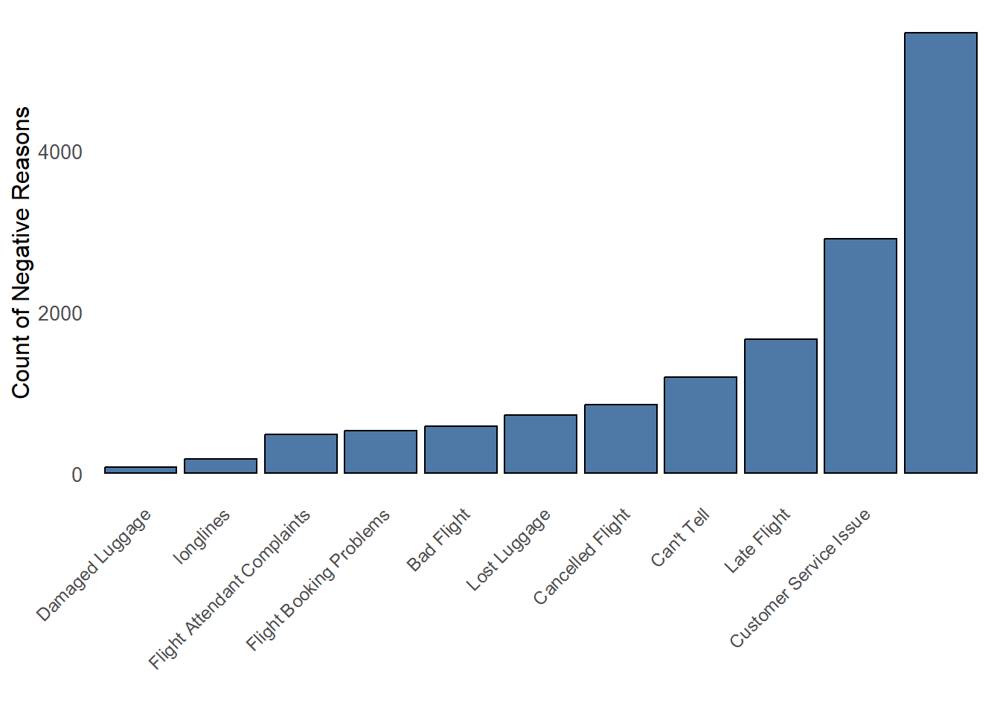
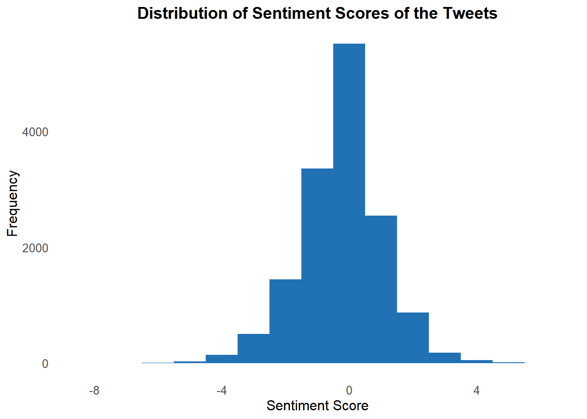
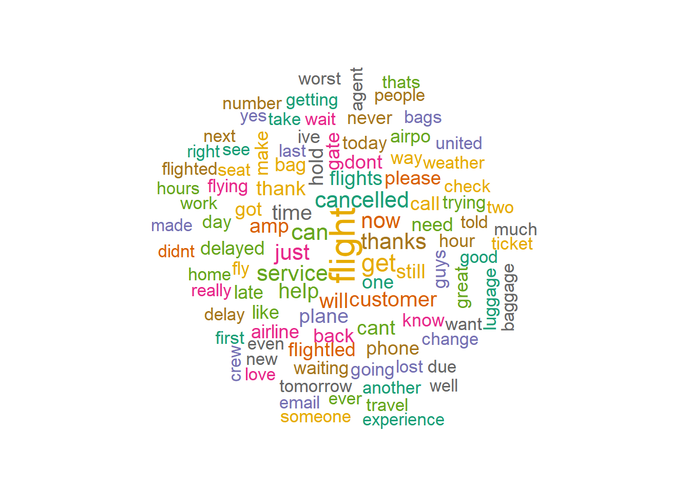
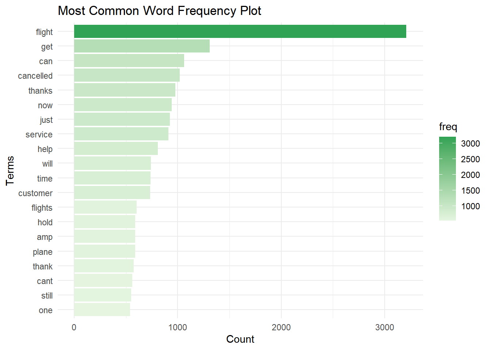
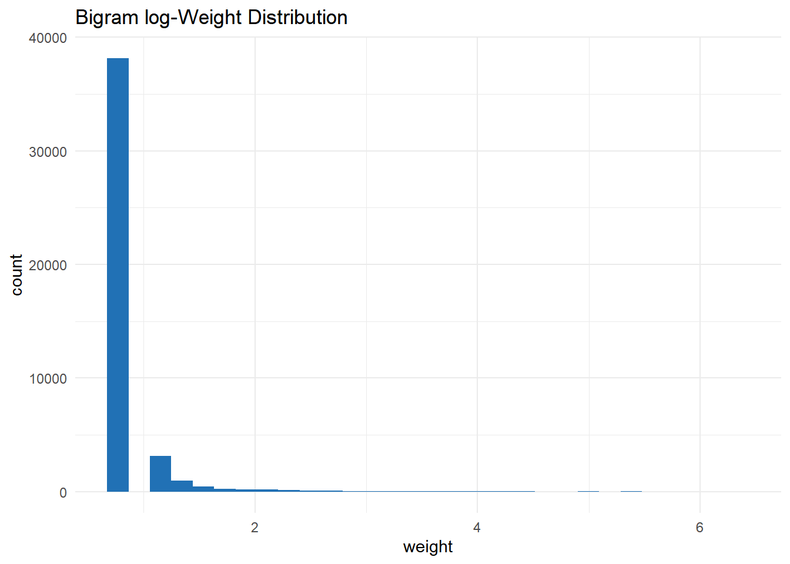
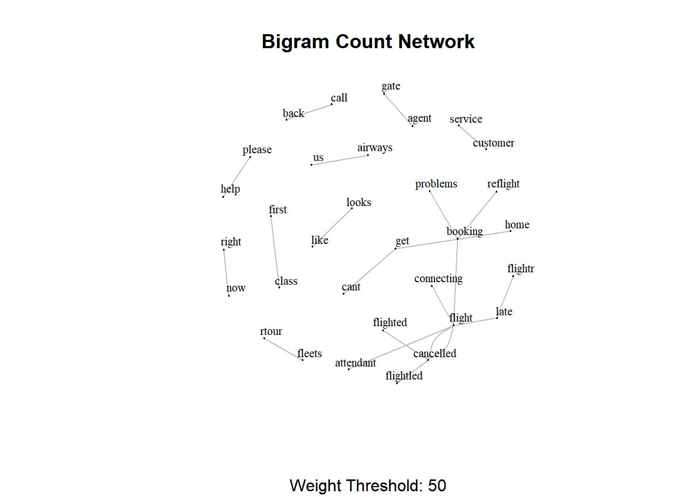

library(hms)
library(twitteR)
library(lubridate)
library(tidytext)
library(tm)
library(wordcloud)
library(igraph)
library(glue)
library(networkD3)
library(rtweet)
library(plyr)
library(stringr)
library(ggplot2)
library(ggeasy)
library(plotly)
library(dplyr)
library(hms)
library(lubridate)
library(magrittr)
library(tidyverse)
library(janeaustenr)
library(widyr)
library(RColorBrewer)
library(ggeasy)Introduction
Welcome to this sentiment analysis project in R, where I delve into the realm of major U.S. airlines and uncover the sentiments expressed by Twitter users regarding their experiences. By analyzing data scraped from February 2015, I aim to gain insights into the problems faced by these airlines through the eyes of their customers.
The dataset used in this analysis originated from Crowdflower’s Data for Everyone library. It is available in both CSV file and SQLite database formats, providing flexibility for your preferred data exploration methods. The transformation code used to format the data can be found on GitHub, ensuring transparency and reproducibility.
Within this dataset, you will find a comprehensive collection of tweets categorized based on their sentiment: positive, negative, or neutral. Additionally, negative tweets have been further classified based on the reasons provided, ranging from “late flight” to “rude service.” This granular categorization enables us to pinpoint specific problem areas faced by these airlines.
Join me on this journey as we uncover the untold stories behind each major U.S. airline, unraveling the sentiments expressed by Twitter users and shedding light on the challenges faced by the industry.
Approach and Methodology
The first step is to gather relevant Twitter data. This typically involves utilizing the Twitter API or third-party tools to retrieve tweets based on specific keywords, hashtags, or user profiles. The collected data forms the basis for further analysis.
Once the data is collected, it undergoes preprocessing to clean and prepare it for sentiment analysis. This involves removing irrelevant information such as URLs, usernames, and special characters, as well as standardizing the text by converting it to lowercase and removing stopwords.
Load the required packages and data
tweets <- read.csv("https://raw.githubusercontent.com/karolo89/WEBKOE/main/projects/Business/BrandPerception/Tweets.csv")%>%
select(-negativereason_confidence)
head(tweets) tweet_id airline_sentiment airline_sentiment_confidence negativereason
1 5.70306e+17 neutral 1.0000
2 5.70301e+17 positive 0.3486
3 5.70301e+17 neutral 0.6837
4 5.70301e+17 negative 1.0000 Bad Flight
5 5.70301e+17 negative 1.0000 Can't Tell
6 5.70301e+17 negative 1.0000 Can't Tell
airline airline_sentiment_gold name negativereason_gold
1 Virgin America cairdin
2 Virgin America jnardino
3 Virgin America yvonnalynn
4 Virgin America jnardino
5 Virgin America jnardino
6 Virgin America jnardino
retweet_count
1 0
2 0
3 0
4 0
5 0
6 0
text
1 @VirginAmerica What @dhepburn said.
2 @VirginAmerica plus you've added commercials to the experience... tacky.
3 @VirginAmerica I didn't today... Must mean I need to take another trip!
4 @VirginAmerica it's really aggressive to blast obnoxious "entertainment" in your guests' faces & they have little recourse
5 @VirginAmerica and it's a really big bad thing about it
6 @VirginAmerica seriously would pay $30 a flight for seats that didn't have this playing.\nit's really the only bad thing about flying VA
tweet_coord tweet_created tweet_location user_timezone
1 2/24/2015 11:35 Eastern Time (US & Canada)
2 2/24/2015 11:15 Pacific Time (US & Canada)
3 2/24/2015 11:15 Lets Play Central Time (US & Canada)
4 2/24/2015 11:15 Pacific Time (US & Canada)
5 2/24/2015 11:14 Pacific Time (US & Canada)
6 2/24/2015 11:14 Pacific Time (US & Canada)str(tweets)'data.frame': 14640 obs. of 14 variables:
$ tweet_id : num 5.7e+17 5.7e+17 5.7e+17 5.7e+17 5.7e+17 ...
$ airline_sentiment : chr "neutral" "positive" "neutral" "negative" ...
$ airline_sentiment_confidence: num 1 0.349 0.684 1 1 ...
$ negativereason : chr "" "" "" "Bad Flight" ...
$ airline : chr "Virgin America" "Virgin America" "Virgin America" "Virgin America" ...
$ airline_sentiment_gold : chr "" "" "" "" ...
$ name : chr "cairdin" "jnardino" "yvonnalynn" "jnardino" ...
$ negativereason_gold : chr "" "" "" "" ...
$ retweet_count : int 0 0 0 0 0 0 0 0 0 0 ...
$ text : chr "@VirginAmerica What @dhepburn said." "@VirginAmerica plus you've added commercials to the experience... tacky." "@VirginAmerica I didn't today... Must mean I need to take another trip!" "@VirginAmerica it's really aggressive to blast obnoxious \"entertainment\" in your guests' faces & they hav"| __truncated__ ...
$ tweet_coord : chr "" "" "" "" ...
$ tweet_created : chr "2/24/2015 11:35" "2/24/2015 11:15" "2/24/2015 11:15" "2/24/2015 11:15" ...
$ tweet_location : chr "" "" "Lets Play" "" ...
$ user_timezone : chr "Eastern Time (US & Canada)" "Pacific Time (US & Canada)" "Central Time (US & Canada)" "Pacific Time (US & Canada)" ...Data Analysis
Data Overview
library(ggplot2)
library(ggthemes)
library(dplyr)
tweets <- tweets %>%
mutate(airline = factor(airline, levels = names(sort(table(airline), decreasing = TRUE))))
ggplot(tweets) +
aes(airline, fill = airline) +
geom_bar() +
geom_text(stat = 'count', aes(label = paste0(round((..count..)/sum(..count..) * 100), "%")), vjust = 1.6, color = "white") +
labs(title = 'Number of Tweets by Airlines', x = "", y = "") +
theme_minimal() +
theme(
plot.title = element_text(hjust = 0.5, size = 16),
axis.title = element_text(size = 12),
axis.text = element_text(size = 10),
panel.grid.major = element_blank(),
panel.grid.minor = element_blank(),
panel.border = element_blank(),
panel.background = element_blank(),
legend.position = "none",
legend.title = element_blank(),
legend.text = element_text(size = 10),
axis.text.y = element_text(size = 10),
legend.key.size = unit(0.5, "cm"),
legend.key.height = unit(0.5, "cm"),
legend.key.width = unit(0.5, "cm")
) +
scale_fill_tableau()
tableau_colors <- c("#4E79A7", "#F28E2B", "#E15759", "#76B7B2", "#59A14F", "#EDC948")
tweets %>%
group_by(airline, airline_sentiment) %>%
summarise(count = n()) %>%
ggplot(aes(airline, count, fill = airline)) +
geom_bar(stat = "identity") +
facet_wrap(~ airline_sentiment, ncol = 1) +
theme(axis.text.x = element_text(angle = 45, hjust = 1, size = 9)) +
labs(x = "Airlines", y = "Count of Tweet Sentiments") +
theme_minimal() +
theme(
axis.title = element_text(size = 12),
axis.text = element_text(size = 10),
panel.grid.major = element_blank(),
panel.grid.minor = element_blank(),
panel.border = element_blank(),
panel.background = element_blank(),
legend.position = "none",
legend.title = element_blank(),
legend.text = element_text(size = 10),
axis.text.y = element_text(size = 10),
legend.key.size = unit(0.5, "cm"),
legend.key.height = unit(0.5, "cm"),
legend.key.width = unit(0.5, "cm")
) +
scale_fill_manual(values = tableau_colors)
tweets %>%
group_by(negativereason) %>%
summarise(count = n(), na.rm = TRUE) %>%
arrange(desc(count)) %>%
ggplot(aes(reorder(negativereason, count), count)) +
geom_bar(fill = "#4E79A7", color = "black", stat = "identity") +
theme_minimal() +
theme(
axis.text.x = element_text(angle = 45, hjust = 1, size = 9),
panel.grid.major = element_blank(),
panel.grid.minor = element_blank(),
panel.border = element_blank(),
panel.background = element_blank(),
legend.position = "none",
plot.title = element_text(hjust = 0.5, size = 16),
axis.title = element_text(size = 12),
axis.text = element_text(size = 10)
) +
labs(x = "", y = "Count of Negative Reasons") +
scale_fill_manual(values = c("#4E79A7")) # Using Tableau palette color
Extracting Tweets
tweets.df <- tweets %>%
mutate(text = str_replace_all(text, "[^[:graph:]]", " ") %>%
gsub("https://", "", .) %>%
gsub("rt", "", .) %>%
gsub("@\\w+", "", .) %>%
gsub("http://", "", .) %>%
gsub("[[:digit:]]", "", .) %>%
gsub("[[:punct:]]", "", .) %>%
gsub("[ |\t]{2,}", "", .) %>%
gsub("[^[:graph:]]", " ", .) %>%
gsub("[[:punct:]]", "", .) %>%
gsub("[[:cntrl:]]", "", .) %>%
gsub(" $", "", .) %>%
gsub("\\d+", "", .) %>%
str_replace_all(., "[^[:graph:]]", " ") %>%
tolower())
cleanText <- tweets.df$text
# remove empty results (if any)
cleanText <- cleanText[cleanText != " "]
head(tweets.df) tweet_id airline_sentiment airline_sentiment_confidence negativereason
1 5.70306e+17 neutral 1.0000
2 5.70301e+17 positive 0.3486
3 5.70301e+17 neutral 0.6837
4 5.70301e+17 negative 1.0000 Bad Flight
5 5.70301e+17 negative 1.0000 Can't Tell
6 5.70301e+17 negative 1.0000 Can't Tell
airline airline_sentiment_gold name negativereason_gold
1 Virgin America cairdin
2 Virgin America jnardino
3 Virgin America yvonnalynn
4 Virgin America jnardino
5 Virgin America jnardino
6 Virgin America jnardino
retweet_count
1 0
2 0
3 0
4 0
5 0
6 0
text
1 whatsaid
2 plus youve added commercials to the experience tacky
3 i didnt today must mean i need to take another trip
4 its really aggressive to blast obnoxious enteainment in your guests faces amp they have little recourse
5 and its a really big bad thing about it
6 seriously would paya flight for seats that didnt have this playing its really the only bad thing about flying va
tweet_coord tweet_created tweet_location user_timezone
1 2/24/2015 11:35 Eastern Time (US & Canada)
2 2/24/2015 11:15 Pacific Time (US & Canada)
3 2/24/2015 11:15 Lets Play Central Time (US & Canada)
4 2/24/2015 11:15 Pacific Time (US & Canada)
5 2/24/2015 11:14 Pacific Time (US & Canada)
6 2/24/2015 11:14 Pacific Time (US & Canada)Frequency of Tweets
# Apply the mutate function to update 'created' column
tweets.df <- tweets.df %>%
mutate(
created = tweet_created %>%
# Remove zeros.
str_remove_all(pattern = '\\+0000') %>%
# Parse date.
parse_date_time(orders = '%m/%d/%Y %H:%M')
)
# Create a new column 'Created_At_Round' by rounding 'created' to hours
tweets.df <- tweets.df %>%
mutate(Created_At_Round = round_date(created, unit = "hours") %>% as.POSIXct())
# Extract the minimum value of 'created' column
min_created <- min(tweets.df$created)
# Print the minimum value
print(min_created)[1] "2015-02-16 23:36:00 UTC"tweets.df %>% pull(created) %>% max()[1] "2015-02-24 11:53:00 UTC"plt <- tweets.df %>%
dplyr::count(Created_At_Round) %>%
ggplot(mapping = aes(x = Created_At_Round, y = n)) +
geom_line(color = "blue") +
labs(x = "Date", y = "Number of Tweets", title = "Number of Tweets per Hour") +
theme_minimal() +
theme(plot.title = element_text(hjust = 0.5))
ggplotly(plt)Loading sentiment word lists
library(tidytext)
# Extract the positive and negative word lists
words <- get_sentiments("bing")
positive <- words %>% filter(sentiment == "positive")
negative <- words %>% filter(sentiment == "negative")
pos.words <- c(positive$word, 'upgrade', 'Congrats', 'prizes', 'prize', 'thanks', 'thnx', 'Grt', 'gr8', 'plz', 'trending', 'recovering', 'brainstorm', 'leader')
neg.words <- c(negative$word, 'wtf', 'wait', 'waiting', 'epicfail', 'Fight', 'fighting', 'arrest', 'no', 'not')Sentiment scoring function
score.sentiment = function(sentences, pos.words, neg.words, airline, .progress='none')
{
require(plyr)
require(stringr)
# we are giving vector of sentences as input.
# plyr will handle a list or a vector as an "l" for us
# we want a simple array of scores back, so we use "l" + "a" + "ply" = laply:
scores = laply(sentences, function(sentence, pos.words, neg.words) {
# clean up sentences with R's regex-driven global substitute, gsub() function:
sentence = gsub('https://','',sentence)
sentence = gsub('http://','',sentence)
sentence = gsub('[^[:graph:]]', ' ',sentence)
sentence = gsub('[[:punct:]]', '', sentence)
sentence = gsub('[[:cntrl:]]', '', sentence)
sentence = gsub('\\d+', '', sentence)
sentence = str_replace_all(sentence,"[^[:graph:]]", " ")
# and convert to lower case:
sentence = tolower(sentence)
# split into words. str_split is in the stringr package
word.list = str_split(sentence, '\\s+')
# sometimes a list() is one level of hierarchy too much
words = unlist(word.list)
# compare our words to the dictionaries of positive & negative terms
pos.matches = match(words, pos.words)
neg.matches = match(words, neg.words)
# match() returns the position of the matched term or NA
# we just want a TRUE/FALSE:
pos.matches = !is.na(pos.matches)
neg.matches = !is.na(neg.matches)
# TRUE/FALSE will be treated as 1/0 by sum():
score = sum(pos.matches) - sum(neg.matches)
return(score)
}, pos.words, neg.words, .progress=.progress )
scores.df = data.frame(score=scores, text=sentences)
return(scores.df)
}Calculating the sentiment score
analysis <- score.sentiment(cleanText, pos.words, neg.words)
# Sentiment score frequency table
score_table <- as.data.frame(table(analysis$score))
colnames(score_table) <- c("Sentiment Score", "Frequency")
score_table Sentiment Score Frequency
1 -8 1
2 -7 1
3 -6 6
4 -5 28
5 -4 142
6 -3 503
7 -2 1442
8 -1 3358
9 0 5507
10 1 2540
11 2 870
12 3 179
13 4 50
14 5 11
15 6 2Histogram of sentiment scores
analysis %>%
ggplot(aes(x = score)) +
geom_histogram(binwidth = 1, fill = "#2171b5") +
labs(x = "Sentiment Score", y = "Frequency") +
ggtitle("Distribution of Sentiment Scores of the Tweets") +
theme_minimal() +
theme(plot.title = element_text(hjust = 0.5, size = 14, face = "bold"),
axis.title = element_text(size = 12),
axis.text = element_text(size = 10),
panel.grid.major = element_blank(),
panel.grid.minor = element_blank(),
panel.border = element_blank(),
panel.background = element_blank()) +
easy_center_title()
ggsave("plot.png", width = 8, height = 6, dpi = 300) # Save the plot as an image fileWordcloud
library(RColorBrewer)
# Create a text corpus
text_corpus <- Corpus(VectorSource(cleanText))
text_corpus <- tm_map(text_corpus, content_transformer(tolower))
text_corpus <- tm_map(text_corpus, removeWords, stopwords("english"))
text_corpus <- tm_map(text_corpus, removeWords, c("global", "globalwarming"))
# Create a term-document matrix
tdm <- TermDocumentMatrix(text_corpus)
tdm <- as.matrix(tdm)
tdm <- sort(rowSums(tdm), decreasing = TRUE)
tdm <- data.frame(word = names(tdm), freq = tdm)
set.seed(123)
wordcloud(text_corpus, min.freq = 1, max.words = 100, scale = c(2.2,1),
colors=brewer.pal(8, "Dark2"), random.color = T, random.order = F)
Word Frequency plot
ggplot(tdm[1:20,], aes(x = reorder(word, freq), y = freq, fill = freq)) +
geom_bar(stat = "identity") +
xlab("Terms") +
ylab("Count") +
coord_flip() +
theme(axis.text = element_text(size = 7)) +
ggtitle("Most Common Word Frequency Plot") +
easy_center_title() +
theme_minimal() +
scale_fill_gradient(low = "#E5F5E0", high = "#31A354")
Network Analysis
Bigram analysis and Network definition
Bigram counts pairwise occurrences of words which appear together in the text.
#bigram
bi.gram.words <- tweets.df %>%
unnest_tokens(
input = text,
output = bigram,
token = 'ngrams',
n = 2
) %>%
filter(! is.na(bigram))
bi.gram.words %>%
select(bigram) %>%
head(10) bigram
1 plus youve
2 youve added
3 added commercials
4 commercials to
5 to the
6 the experience
7 experience tacky
8 i didnt
9 didnt today
10 today mustextra.stop.words <- c('https')
stopwords.df <- tibble(
word = c(stopwords(kind = 'es'),
stopwords(kind = 'en'),
extra.stop.words)
)Next, we filter for stop words and remove white spaces.
bi.gram.words %<>%
separate(col = bigram, into = c('word1', 'word2'), sep = ' ') %>%
filter(! word1 %in% stopwords.df$word) %>%
filter(! word2 %in% stopwords.df$word) %>%
filter(! is.na(word1)) %>%
filter(! is.na(word2)) Finally, we group and count by bigram.
bi.gram.count <- bi.gram.words %>%
dplyr::count(word1, word2, sort = TRUE) %>%
dplyr::rename(weight = n)
bi.gram.count %>% head() word1 word2 weight
1 customer service 526
2 cancelled flightled 451
3 late flight 232
4 cancelled flighted 202
5 booking problems 142
6 late flightr 142Let us plot the distribution of the weightvalues:
## Note that it is very skewed, for visualization purposes it might be a good idea to perform a transformation, eg log transform:
bi.gram.count %>%
mutate(weight = log(weight + 1)) %>%
ggplot(mapping = aes(x = weight)) +
theme_light() +
geom_histogram(fill = "#2171b5") +
labs(title = "Bigram log-Weight Distribution")+
theme_minimal()
Network visualization
threshold <- 50
# For visualization purposes we scale by a global factor.
ScaleWeight <- function(x, lambda) {
x / lambda
}
network <- bi.gram.count %>%
filter(weight > threshold) %>%
mutate(weight = ScaleWeight(x = weight, lambda = 2E3)) %>%
graph_from_data_frame(directed = FALSE)
plot(
network,
vertex.size = 1,
vertex.label.color = 'black',
vertex.label.cex = 0.7,
vertex.label.dist = 1,
edge.color = 'gray',
main = 'Bigram Count Network',
sub = glue('Weight Threshold: {threshold}'),
alpha = 50
)
We can go a step further and make our visualization more dynamic using the networkD3 library.
threshold <- 50
network <- bi.gram.count %>%
filter(weight > threshold) %>%
graph_from_data_frame(directed = FALSE)
# Store the degree.
V(network)$degree <- strength(graph = network)
# Compute the weight shares.
E(network)$width <- E(network)$weight/max(E(network)$weight)
# Create networkD3 object.
network.D3 <- igraph_to_networkD3(g = network)
# Define node size.
network.D3$nodes %<>% mutate(Degree = (1E-2)*V(network)$degree)
# Define color group
network.D3$nodes %<>% mutate(Group = 1)
# Define edges width.
network.D3$links$Width <- 10*E(network)$width
forceNetwork(
Links = network.D3$links,
Nodes = network.D3$nodes,
Source = 'source',
Target = 'target',
NodeID = 'name',
Group = 'Group',
opacity = 0.9,
Value = 'Width',
Nodesize = 'Degree',
# We input a JavaScript function.
linkWidth = JS("function(d) { return Math.sqrt(d.value); }"),
fontSize = 12,
zoom = TRUE,
opacityNoHover = 1
)References:
Bing Liu, Minqing Hu and Junsheng Cheng. “Opinion Observer: Analyzing and Comparing Opinions on the Web.” Proceedings of the 14th International World Wide Web conference (WWW-2005), May 10-14, 2005, Chiba, Japan.